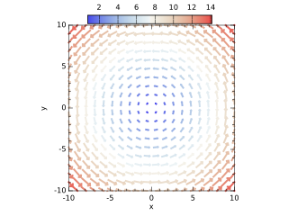

| Type | Visibility | Attributes | Name | Initial | |||
|---|---|---|---|---|---|---|---|
| integer, | public, | parameter | :: | N | = | 20 | |
| real(kind=wp), | public, | dimension(N) | :: | x | |||
| real(kind=wp), | public, | dimension(N) | :: | y | |||
| real(kind=wp), | public, | dimension(N,N) | :: | u | |||
| real(kind=wp), | public, | dimension(N,N) | :: | v | |||
| real(kind=wp), | public, | dimension(N,N) | :: | m | |||
| integer, | public | :: | i | ||||
| integer, | public | :: | j |
subroutine doQuiver
!! 
integer,parameter::N = 20
real(wp),dimension(N)::x,y
real(wp),dimension(N,N)::u,v,m
integer::i,j
x = linspace(-10.0_wp,10.0_wp,N)
y = linspace(-10.0_wp,10.0_wp,N)
forall(i=1:N,j=1:N)
u(i,j) = -y(j)
v(i,j) = x(i)
m(i,j) = sqrt(u(i,j)**2+v(i,j)**2)
end forall
call figure()
call subplot(1,1,1,aspect=1.0_wp)
call xylim(mixval(x),mixval(y))
call quiver(x,y,u,v,c=m,s=m,scaling=2.0_wp,lineWidth=2.0_wp)
call colorbar(m,10)
call ticks()
call labels('x','y','')
end subroutine doQuiver